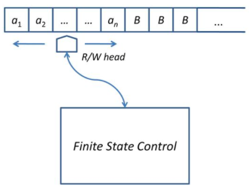

Apa itu Mesin Turing ?
Mesin Turing adalah sebuah finte automaton yang memiliki sebuah tape tunggal dengan panjang tak terhingga yang dapat membaca dan menulis data. Mesin Turing ini awalnya diusulkan oleh Alan Turing, seorang matematikawan Inggris sebagai model matematis sederhana sebuah komputer pada tahun 1936. Mesin Turing dapat berperan sebagai mesin pengenal bahasa formal. Bahasa yang dapat dikenali Mesin Turing yaitu Unrestricted (bahasa tanpa batasan aturan produksi).
Seperti yang bisa dilihat pada gambar diatas, Mesin Turing memiliki beberapa komponen yaitu :
- Finite Control (Pengendali berhingga) merupakan otam dari Mesin Turing diimplementasikan dari algoritma pengenalan kalimat
- Tape yang memiliki karakteristik :
- Tape input panjangnya tak berhingga. Dapat dilihat pada gambar diatas dimulai dari ... sampai ... (tak berhingga)
- Pada tape input sel yang tidak berisi simbol masukan akan berisi simbol kosong (blank = B)
- Terdapat sebuah tape head yang ditempatkan di salah satu tape sebagai penunjuk sel yang sedang dibaca dan dapat digeser ke kiri atau kanan
- Dapat dibaca maupun ditulis
Bagaimana Mesin Turing dilambangkan dalam notasi formal ?
Mesin Turing dalam notasi formal dilambangkan sebagai berikut :
M = (Q, σ, Γ, δ, q0, B, F)
Q: Himpunan berhingga state (a, b, c, ... atau q0, q1, q2)
Γ: Himpunan berhingga simbol yang muncul di pita
σ: Himpunan simbol-simbol, subset dari Γ, termasuk di dalamnya B
δ: Fungsi transisi yang memetakan Q × Γ → Q × Γ x {L,R}
L dan R menyatakan gerakan head left right.
qo : Status awal
F : Himpunan status akhir
Bagaimana Prinsip/Cara Kerja Mesin Turing ?
Prinsip kerja mesin turing yaitu :
| 1. | Lihat state awal dan simbol yang ditunjuk oleh head |
| 2. | Berdasarkan fungsinya tentukan :
|
| 3. | Jika pasangan state dan simbol yang ditunjuk head tidak ada lagi fungsi transisinya, maka mesin turing berhenti |
| 4. | Jika mesin turing berhenti di state final berarti input diterima. Begitupun sebaliknya, jika berhenti di bukan final state maka input ditolak. |
Contoh Soal Mesin Turing
Misalkan dalam Mesin Turing terdapat :
Q = {q1,q2}
σ = {a,b}
Γ = {a,b,b}
F = {q2}
S = {q1}
Fungsi Transisinya :
Ket : Pergerakan mesin turing : R (right) atau L (Left)
- δ (q1,a) = (q1,a,R)
pada state q1, head menunjuk karakter ‘a’ pada pita, menjadi state q1, head bergerak ke kanan - δ (q1,b) = (q1,a,R)
pada state q1, head menunjuk karakter ‘b’ pada pita, menjadi state q1, headmenulis karakter ‘a’ lalu bergerak ke kanan - δ (q1, b ) = (q2, b ,L)
pada state q1, head menunjuk karakter ‘ b ’ pada pita menjadi state q2,head bergerak ke kiri
Jadi, berdasarkan fungsi transisi diatas, jika input yang dimasukkan yaitu "abbaa", maka Mesin Turing akan beroperasi sebagai berikut :
Sesuai prinsip kerja, dimulai dengan Head berada di posisi awal pada state q1
Berdasarkan fungsi transisi a, Head bergerak ke kanan
Berdasarkan fungsi transisi b, b diganti a dan head bergerak ke kanan
Berdasarkan fungsi transisi b, b diganti a dan head bergerak ke kanan
Berdasarkan fungsi transisi a, Head bergerak ke kanan
Berdasarkan fungsi transisi a, Head bergerak ke kanan dan menunjuk b karena yang kosong ditulis b
Berdasarkan fungsi transisi c, Head bergerak ke kiri dan statenya q2 dan tidak ada lagi transisi dari state q2 sehingga mesin turing berhenti. Karena mesin berhenti di state akhir (q2) maka input abbaa diterima
Kesimpulan
Walaupun mesin turing merupakan model yang sangat sederhana dari komputer, tetapi memiliki kemampuan menggambarkan perilaku komputer secara umum. Mesin Turing terdiri dari 2 komponen yaitu tape dan finite state control. Tape head dalam mesin turing dapat digerakkan dengan fungsi transisi.
back to top